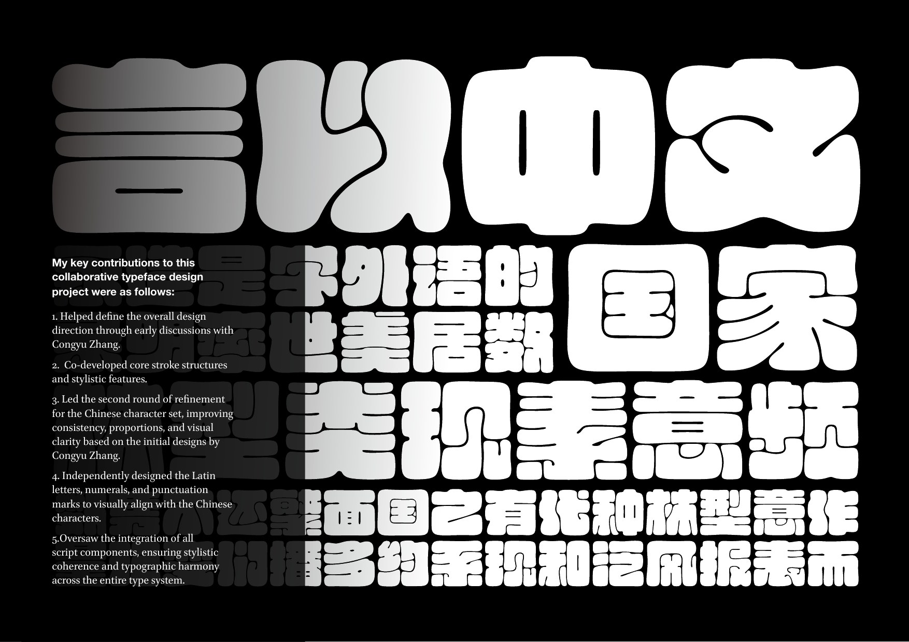
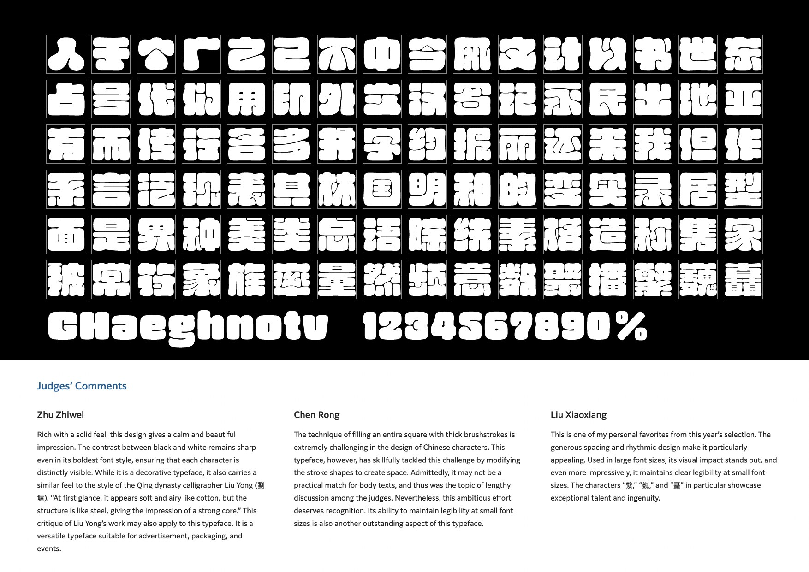

Morisawa Type Design Competition 2024 · Hanzi / Latin
Yourong Type
A display typeface shaped through the free transformation of Chinese characters: soft, rounded, and expansive, as if water enters the square character box.


